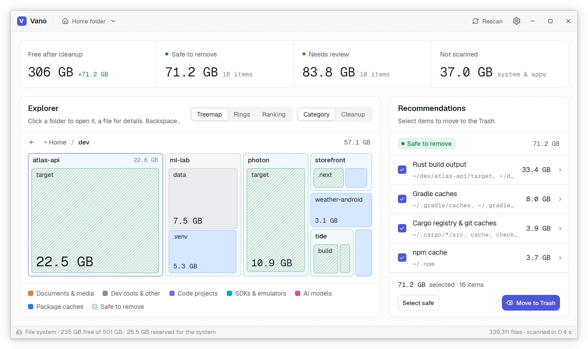
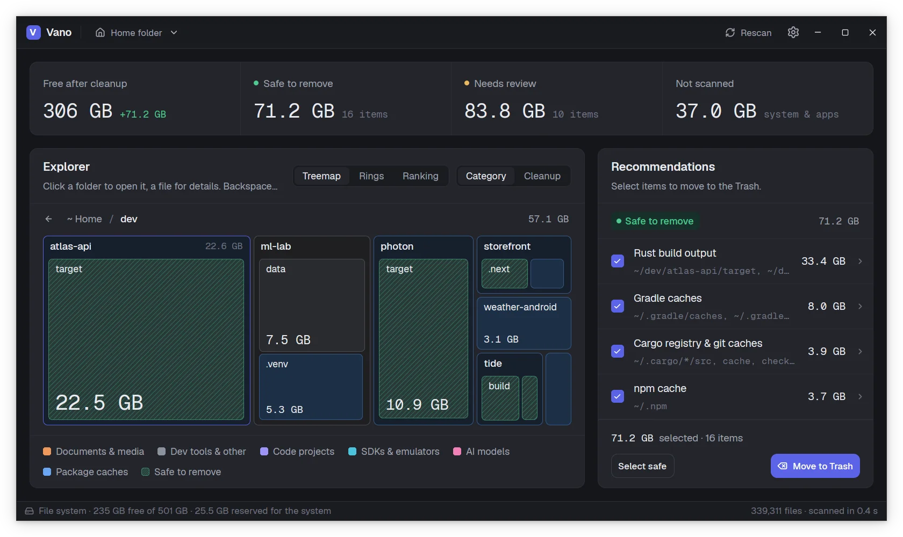

Zoom in, folder by folder
The treemap shows every folder sized by the space it takes, two levels at a time. Click one to grow it to the whole area, press Backspace to step back. Tiles spring to their new places, so you never lose track of where you are.
- Colored by what fills it: code, caches, SDKs, AI models, media
- Rings and a ranking of the biggest entries, for the same folder
- Sizes are the real space on disk, with hard links counted once

